#1423 Black Sea
 gesehen am 03.07.2015
gesehen am 03.07.2015
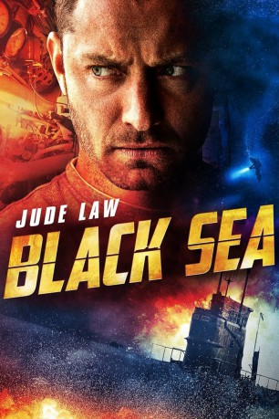 
 IMDB-Wertung: 6.4 / 10
IMDB-Wertung: 6.4 / 10  Metascore: 62
Metascore: 62 
Nachdem Robinson völlig unerwartet seinen Job bei einem Bergungsunternehmen verliert, weiß der ehemalige Navy-Kapitän nichts mit sich anzufangen. Er fühlt sich seiner Lebensaufgabe beraubt und möchte schnellstmöglich wieder in die Tiefe des Meeres. Um seine ehemaligen Arbeitgeber der britischen Navy wieder zu besänftigen, nimmt der arbeitslose U-Boot-Kapitän einen gefährlichen Job an, der ihm vom Mittelsmann Daniels angeboten wird: Er stellt eine Crew zusammen, die zum Schwarzen Meer fahren soll, um dort ein gesunkenes Nazi-U-Boot ausfindig zu machen. An dessen Bord soll sich ein Haufen Gold befinden, das einst Adolf Hitler gehörte.
Jahr: 2014
Dauer: 114 Minuten
FSK: 12
Land: England Studio: Sony Pictures ReleasingTonspuren: DTS - ,
Untertitel: Deutsch, Englisch,
Auflösung: 1080p (1920x800) Größe: 8939 MB
Genre: Abenteuer, Thriller
Regisseur: Kevin Macdonald
Drehbuch: Dennis Kelly
Soundtrack: Ilan Eshkeri
Darsteller:
- 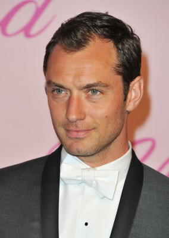 Jude Law als Robinson
- Karl Davies als Liam
- 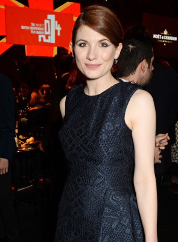 Jodie Whittaker als Chrissy
- Gus Barry als Martin, aged 12
 Konstantin Khabenskiy als Blackie
Konstantin Khabenskiy als Blackie- Daniel Ryan als Kurston
- 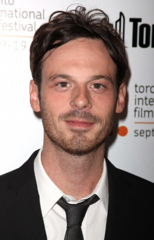 Scoot McNairy als Daniels
- 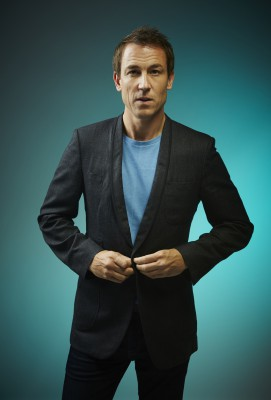 Tobias Menzies als Lewis
- 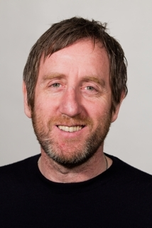 Michael Smiley als Reynolds
- 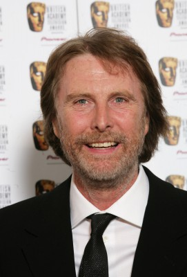 David Threlfall als Peters
- Sergey Puskepalis als Zaytsev
- 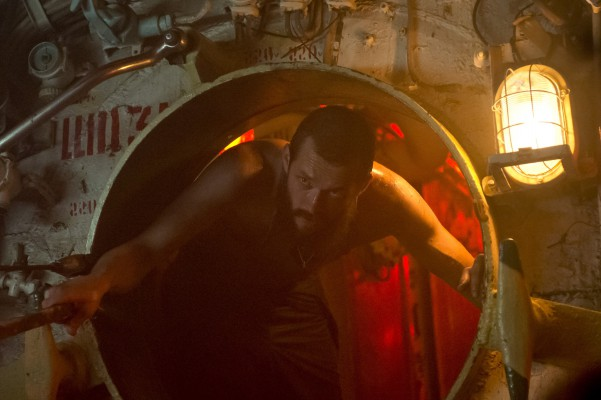 Grigoriy Dobrygin als Morozov
- 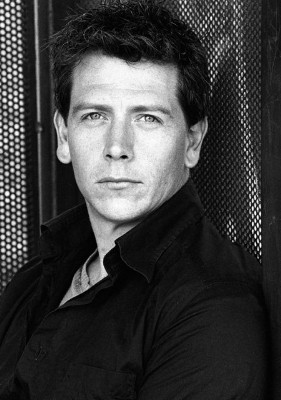 Ben Mendelsohn als Fraser
- Branwell Donaghey als Gittens
- Bobby Schofield als Tobin
- Zaak Conway als Martin, aged 4
- Dennis Kelly als Himself
- Kevin Macdonald als Himself
- Charles Steel als Himself
- 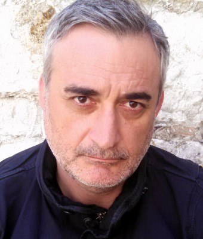 Mihai Arsene als Ukrainian Drunk 2 , uncredited
- Paulina Boneva als Job Center Worker , uncredited
- 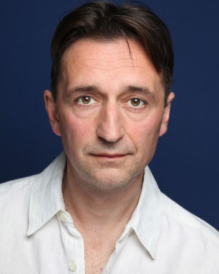 Georg Nikoloff als Ukrainian drunk 1 , uncredited
- Paul Terry als Dog Walker , uncredited
- Llewella Gideon als Job Centre Worker
- Sergey Kolesnikov als Levchenko
- Sergey Veksler als Baba
- Yuri Klimov als Ukranian Admiral
- Nick Palmer als Himself
- Habib Anibaba als Security Guard , uncredited
- David Cromarty als Salvage Worker , uncredited
- Leigh Dent als Mum , uncredited
- Denis Khoroshko als Pub Customer , uncredited
- Stephen McDade als Scrapyard Worker , uncredited
- Dean Roof als Job Seeker , uncredited
- June Smith als Woman in black in bar , uncredited
- Ryan Wiggins als School boy , uncredited
- Micky Woodman als Tattoed man in cafe , uncredited
Datei: X:\2014(A-F)\Black Sea (2014, FSK12, 1920x800).mkv seit 02.07.2015
Festplatte: HD 2013(I-Z)-2014(A-Z)
 Es gibt insgesamt 119 Filme in der Gruppe '2014(A-F)'
Es gibt insgesamt 119 Filme in der Gruppe '2014(A-F)'